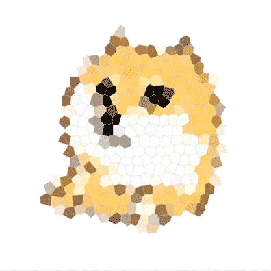

首页
文章
标签
历史
关于

「恒☆」の博客
OpenIdea.Xin By JimJin @ 2017.9.19
ABOUT ME
Jim.恒星
智障人士, 学网络出生, 转行WEB, 喜欢java爬虫
GitHub: github.com/JinHengyu
WeChat: jinhengyu12138
Email : jinhengyu666@gmail.com
坐标 ▪ 南京
<!-- 这里引入百度地图 -->